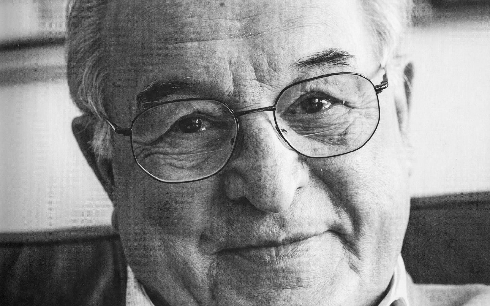

"Il Pastificio Felicetti nasce nel 1908 a Predazzo (TN), nel cuore della Val di Fiemme, per intuinzione di Valentino Felicetti.
È il pastificio più alto d'Europa (a 1.018 metri di quota).
Guidato oggi dalla quinta generazione, unisce l'acqua purissima di sorgente all'aria pura delle Dolomiti."
Nei primi anni del Novecento, Valentino Felicetti ebbe la brilliante intuizione che le condizioni uniche dell'ambiente alpino (l'acqua cristallina e l'aria d'alta quota) potessero conferire alla pasta di grano duro un sapore e una consistenza del tutto unici. In un territorio dove l'agricoltura cerealicola era marginale, iniziò questa impresa scommettendo sulla qualità superiore dell'impasto
Negli anni Sessanta, mentre il Trentino contava ben undici pastifici, tutti destinati a chiudere per via della concorrenza industriale, Felicetti rimase l'unico superstite. La svolta arrivò con l'ingresso in azienda di Riccardo Felicetti (attuale CEO e figura di spicco anche a livello nazionale come Presidente dei Pastai Italiani). Sotto la sua guida, l'azienda ha puntato su due pilastri fondamentali:
Nel 2004, l'azienda ha lanciato la linea di alta gamma Monograno Felicetti, pensata appositamente per il mondo dell'alta ristorazione e per gli chef. Questa linea seleziona materie prime monorigine tracciabili, come: